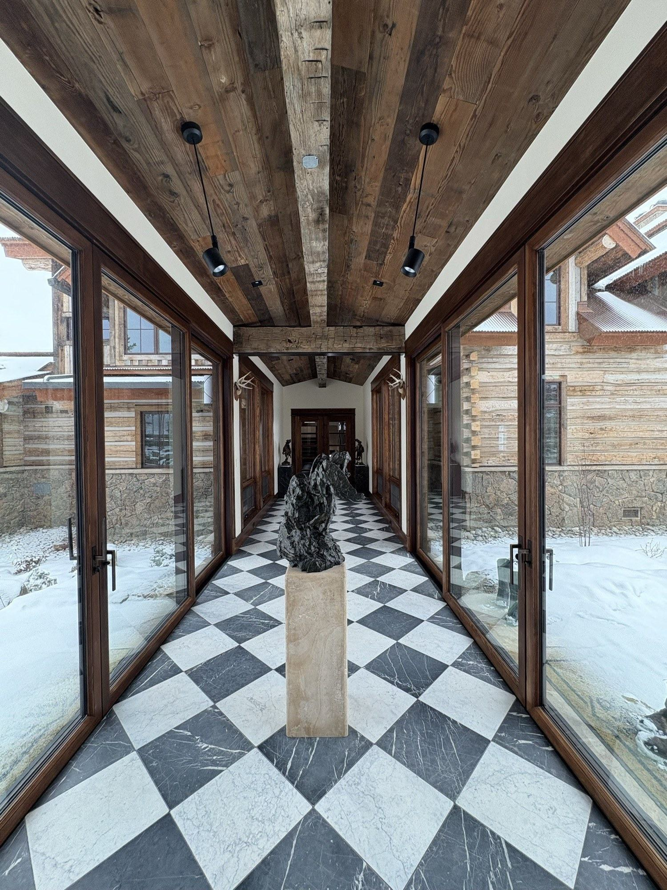

Finish the basement right — from behind the walls out.
A finished basement is the most usable square footage you can add per dollar — a guest suite, a media or bunk room, a home office, a second living space. The catch is that the parts that decide whether it lasts are the parts you never see: moisture, egress, insulation, and radon. Elk Ridge handles those first, then builds the finished space on top of a base that holds up to a Steamboat winter — on a written scope, with a photo update every working day.
Call or text 970-393-6239Photos of your space welcome · 30-minute response, Mon–Fri
Moisture and radon handled first · Egress to code · Insulated for Zone 7B · Written scope before demo.
Here's what finishing a basement really involves, what moves the budget, and how we run it — in plain English. A basement is different from any other room in the house: it sits below grade, against cold soil and ground moisture, and out here it sits in a high-radon county. Get the hidden layers right and you gain a room that feels like the rest of the home. Skip them and you get a finished space that grows mold, fails inspection, or traps a health risk behind new drywall. You'll leave this page knowing enough to make confident calls — without the overwhelm.
Basement finishing is part of our interior remodeling work — everything here is specific to building below grade.
The hidden layers come first — then the finishes.
A basement is built in order, from the concrete out. Each layer below has to be right before the next one covers it, because once the drywall is up, the only way to fix what's behind it is to open it back up. Here's what actually matters, in plain terms:
Moisture control (do this first)
Concrete lets ground moisture and water vapor through, and a finished wall built tight against a damp foundation is how basements grow mold behind new drywall. We assess the foundation, manage water before it reaches the framing — drainage, vapor control, and the right gap between concrete and the finished wall — so the space stays dry for the life of the finish.
Egress (this is code, not optional)
Any basement bedroom needs a legal egress: a window or door big enough to climb out of in a fire and for a firefighter to climb in. In most finished basements that means cutting in an egress window and digging a window well. It's a building-code requirement and an inspection item, so we plan it into the layout from the start, not as an afterthought.
Radon (a real Steamboat issue — more below)
Routt County is a high-radon area, and radon collects in lower levels. We address it as part of the build — test, and install or tie into a mitigation system — so you're not sealing a health risk behind a new wall.
Insulation to the climate zone
Below-grade walls lose heat to cold soil year-round. We insulate the foundation walls to Climate Zone 7B so the basement is comfortable and efficient instead of the cold, clammy room nobody wants to sit in — and so it doesn't drag on your heating bill.
Framing (built for how basements move)
Basement framing has to account for a concrete floor that can move with the seasons. We frame the walls to handle that movement, set true and plumb, so the finishes on top don't crack or bind down the line.
Layout & how you'll use it
This is where the room becomes yours: a guest suite, a bunk or media room, a second living area, a home office, a wet bar, added storage — or a mix. We plan the layout around how you'll actually use the space, around the egress and any existing mechanicals (furnace, water heater, panel), and around where plumbing can realistically run for a bathroom.
HVAC & heating the lower level
A finished basement needs real heat and air movement, not just a register borrowed from upstairs. We plan how the lower level gets conditioned — extending ductwork, adding returns, or in-floor heat where it fits — so it's comfortable in every season.
Finishes
The part you see: flooring rated for below-grade, drywall, trim, lighting, a bathroom or kitchenette, built-ins. With the hidden layers done right, the finishes are the straightforward part — and they last because the base under them is sound.
The point: Most of what makes a basement succeed or fail is invisible once it's done. Crews chasing the finished look skip the moisture, egress, insulation, and radon work — and the homeowner pays for it later in mold, a failed inspection, or a cold, unhealthy room. We do the parts behind the wall first, in the right order, and build the finished space on a base that lasts. Older home? We test for asbestos and lead before anything comes off a wall.
What drives the cost of finishing a basement.
A finished basement usually delivers more usable space per dollar than almost any other project — but the number swings with what's behind the walls and how you'll use the space. The figures below are general planning guidance, not a quote. Your real number comes from a written, line-item scope after the walkthrough.
Industry guides put a finished basement in Colorado in a wide band depending on size, finish level, and whether a bathroom is added. Egress windows and radon mitigation are typically separate, meaningful line items. Every project is scoped individually and put in writing — you approve the scope and the budget before anything comes off a wall.
Get budget direction for your basement —
A basement out here has to handle things a flatland basement never will.
This is where a local builder earns the job. Four mountain factors decide whether a finished basement lasts — and we plan for all four before the first wall goes up:
Moisture and freeze behind the walls
Our freeze-thaw cycle drives ground moisture against the foundation, and a wall built tight to damp concrete grows mold where you can't see it. We manage water and vapor before the framing goes up, and detail the wall so the foundation can stay dry through every season.
Radon — Routt County is a high-radon area
Colorado notes elevated radon in roughly one of every two homes statewide, and radon concentrates in lower levels. We treat testing and mitigation as part of finishing a basement here, not an upsell — so you're not sealing a known health risk behind new drywall.
Insulated for Climate Zone 7B
Below-grade walls bleed heat to cold soil all year. We insulate the foundation walls to the climate zone so the basement is warm and efficient instead of the cold room you avoid — and so it doesn't run up your heating bill.
Egress and Routt County code
Egress requirements and floating-wall details for our soils are a permit-and-inspection matter here. We plan egress into the layout from the start and build to what the local code requires, so the project passes inspection the first time.
The hidden layers first, the finishes second — one owner on the whole thing.
The difference between a basement that lasts and one that fails is the order of operations and who's accountable for it. Here's how we run yours:
- 01
We handle what's behind the wall first
Moisture control, egress, radon, and climate-zone insulation are planned and built before the finished space goes on top. The base comes first, every time.
- 02
We plan plumbing and HVAC before framing
If you're adding a bathroom, kitchenette, or heat to the lower level, we route it before a wall closes — so nothing gets fished in late or boxed out where it doesn't belong.
- 03
One owner, one job at a time
We run one job at a time and sequence the trades so they aren't tripping over each other. The owner is on your job and reachable directly — same number, same business day.
- 04
You see it every working day
A photo update every working day and a short written weekly recap, sent to whoever you want, wherever you are. You watch the hidden layers go in, not just the finished reveal.
- 05
The promise stack
A written, line-item scope signed before demo · change orders approved in writing before any added work · your home protected and broom-clean at the end of every working day · every sub verified before they set foot in your home · a written 2-year workmanship warranty · final payment only after you sign off.
A few questions to think through before we talk.
You don't need answers to all of these — they just help you picture the project and make our walkthrough faster and more useful.
How do you want to use the space?
Guest suite, media or bunk room, second living area, home office, gym, wet bar, storage — or a combination. This shapes everything else.
Do you need a bedroom or a bathroom down there?
A bedroom triggers egress; a bathroom or kitchenette means plumbing below grade. Both are worth flagging early because they move the budget and the layout.
Have you noticed any moisture, dampness, or musty smell down there?
Even a little is worth mentioning — it tells us what the foundation needs before we frame.
Has the basement ever been tested for radon?
If yes, do you have the result. If not, that's fine — we plan testing in. Routt County is a high-radon area.
What's your timeline relative to ski season and guests?
Knowing when you'd want it done helps us plan around material lead times and seasonal crew availability.
Talk it through with us —
Basement finishing questions, answered straight.
Do I really need an egress window?
Should I be worried about radon in Steamboat?
How do you keep a finished basement from getting damp or moldy?
Can I add a bathroom or a kitchenette down there?
Will the basement actually be warm enough to use in winter?
How long does it take to finish a basement?
Finished basements you can see.
The photos here show real finished craftsmanship completed by our crew, used with permission. We don't show stock images or another company's work as our own. As our first basement Elk Ridge projects complete with homeowner consent, full before-and-after sets will be added here.



The No-Surprise Steamboat Remodel.
The promises hold on every job, basement included:
- 01
The 30-Minute Promise
Call or message during business hours and hear back within 30 minutes. You never chase us.
- 02
The No-Surprise Scope Guarantee
A written, line-item scope signed before demo day. The price changes only by a change order you approve in writing.
- 03
The Daily Visibility Guarantee
A photo and status update every working day, plus a short written weekly recap, sent to whoever you want, wherever you are.
- 04
The Broom-Clean Guarantee
Your home protected and broom-clean at the end of every working day, with a professional deep-clean at completion.
- 05
The Verified-Crew Guarantee
Every sub has a current insurance certificate, Colorado trade license where applicable, and signed agreement on file before they set foot in your home.
Plus: a written 2-year workmanship warranty, and final payment only after you sign off at the satisfaction walkthrough.
Ready to put the lower level to work.
Tell us how you'd want to use the basement — guest suite, media or bunk room, second living space, office, or a mix — and whether you've noticed any moisture or had it tested for radon. The fastest start is a short call or text with us, or send your photos and we'll point you the right way. We'll follow the walkthrough with a written, line-item proposal within 48 hours.
970-393-6239Written, line-item proposal within 48 hours of your walkthrough. Calls and texts answered Monday–Friday, 7am–5pm MT — photos and remote walkthroughs welcome. Licensed and insured in Colorado — certificate of insurance available on request.